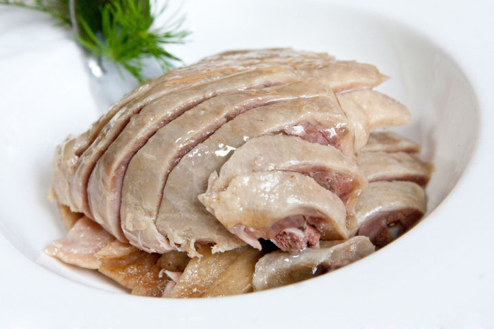

知


中秋习俗之一是吃月饼。关于月饼的起源，有一个说法，认为它是推翻前朝统治的暗号。然后呢，部分地区还有一个习俗，就是吃鸭子。 吃鸭子这个说法，是因为当时人们管蒙古人叫「鞑子」，谐音鸭子，所以八月十五杀鸭子，也是一个习惯。 至于为什么鞑子能谐音到鸭子，是这样的，因为鸭子英语里是duck，du发音鞑…我编不下去了，我也不知道为什么… 好像各地小吃店里贴着的「XXXX的起源」，要么秦始皇统一六国时期，要么康熙下江南时期一样，不是研究这个的，看个热闹就好。 至于为什么我要在中秋节做鸭子吃？ 因为中秋节呀，过节了当然要吃点儿好的。 理由多充分！
板栗啤酒鸭
关于鸭子： 鸭子有两种，仔鸭和老鸭。仔鸭肉汁丰富，口感细嫩，但是肉里的脂肪含量少，比较适合煎炒烤炸；老鸭因为生长周期更长，肉更紧致，鲜味物质（呈味核苷酸）也就更丰富，也更有大家所说的「鸭味」，所以更适合煮、炖、焖等等做法。 怎么买？菜市的话问摊主，超市的话，一般都已经区分过，看包装就好。 买了半只老鸭，我一个人的份（你们看，我食量真的不小）。
不过因为养殖老鸭的时间成本太高，现在真正意义上的「老鸭」挺少的，价格也贵…sad，伤心。 鸭子洗干净，放清水里浸泡半小时，去掉血水，之后捞出滤干，滤干，滤干。 姜切片蒜去皮，生板栗剥壳。 你们看，生板栗这个词都变色了，意思就是不能用你当零食吃的那些炒熟的板栗代替。
板栗剥壳麻烦？不会剥？我一般买剥好壳的板栗，吃多少买多少，所以这种问题，不存在的。 葱姜蒜这类配料，很多人不爱吃。不过呢，它们对于整道菜的提升是非常大的，如果你没到看见菜里有它们就反胃的程度，还是放吧——出锅之后，夹出来不吃就好。 锅里放油，2汤匙这个量，要比平常炒菜稍多一些，不不不，你用不粘锅也得多一些，板栗吃油，油不够多，菜就不够香。
吃得开心：）
编辑于 2017-10-03
文章被以下专栏收藏
推荐阅读
中秋大“阅”饼：广式 v.s. 苏式
企鹅君中秋大“阅”饼：广式 v.s. 苏式
企鹅君中秋大“阅”饼：广式 v.s. 苏式
企鹅君中秋大“阅”饼：广式 v.s. 苏式
企鹅君
还缺一碟烫青菜：）
还缺一碟烫青菜：）
还缺一碟烫青菜：）
还缺一碟烫青菜：）
还缺一碟烫青菜：）
还缺一碟烫青菜：）
还缺一碟烫青菜：）
还缺一碟烫青菜：）